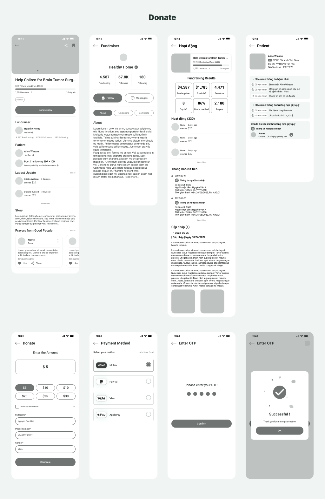
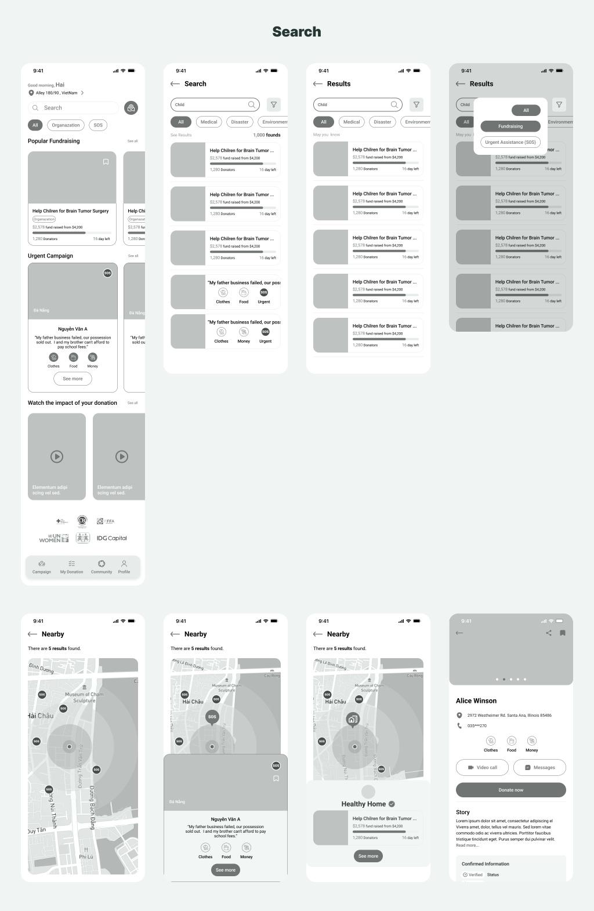
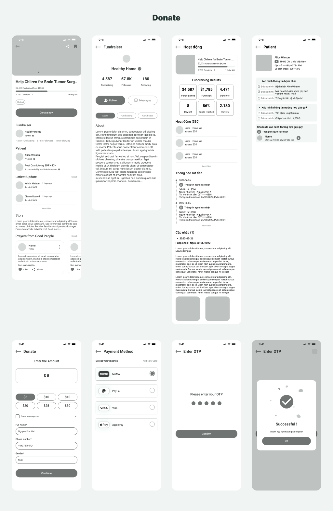
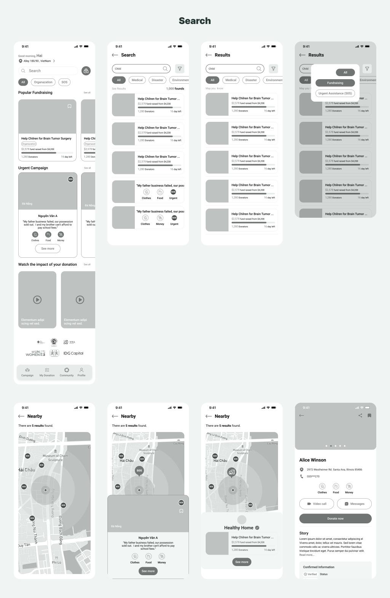
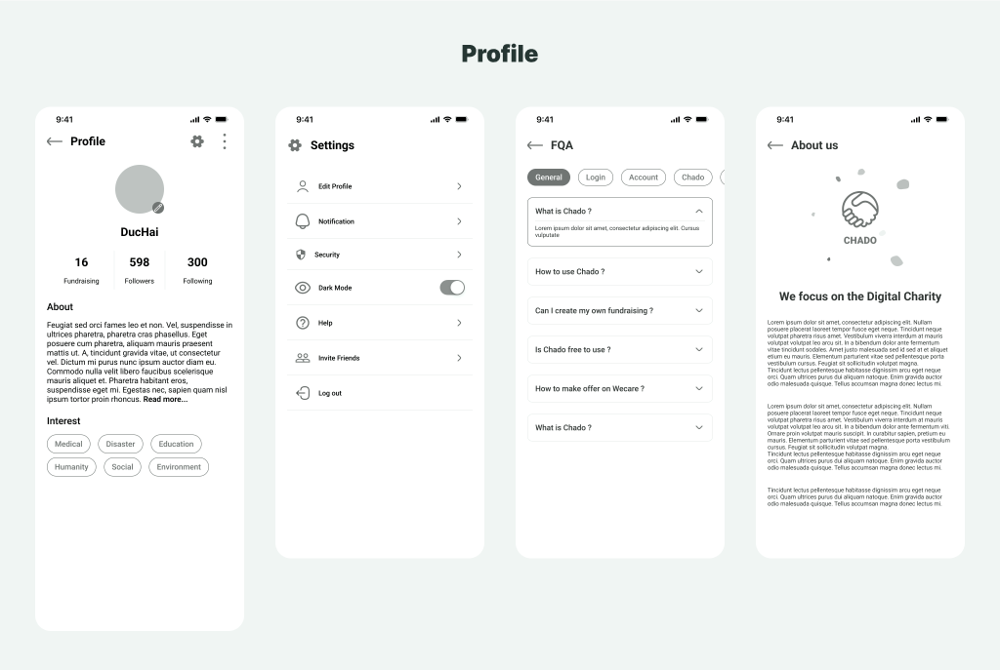
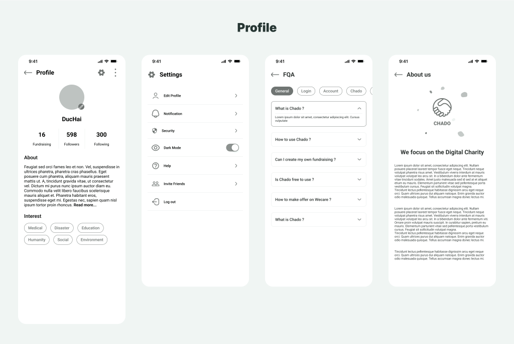

Overview
Challenge
At the beginning of 2021, the keyword “charity” was one of the hottest search terms in Vietnam. Many vietnamese popular comedians have been criticized by the public after they called for donations for flood victims last October but failed to transfer the donations . And the unclear and transparent statements and donation process have sparked a movement of people who doubt about these seemingly meaningful actions. To solve this problem, we created this app.
About Chado
- Chado is a technology platform that supports reputable fundraising campaigns and helps users to know who is in difficulty nearby
- Donate quickly and safely with verified information
- Covers many different areas from health, animal welfare, education to facility support.
- Together, we can make a difference to at least one unfortunate person
Value Proposition
Transparency
All donations are publicly visible
Verified
All charities and campaigns are verified
Safety
Encrypted campaigns for your safety
Society
Spread kindness via social media
Problem

Solution
Design Process
To work on this project, we took the Design Thinking framework as a guide tool in the process.
It’s a
non-linear,
iterative, process that we used to understand users, challenge assumptions, redefine problems and
create innovative solutions to prototype and test.
The main advantages of this process are that is allows us to accurately define our users, their task
and environments, involving user in design and development, feedback from user during design.
Empathy (1/5)
Market Research
To get an overview of this field, we have conducted market research based on available data on the internet. After referring to the scientific research, "People's perception of charity activities", we have extracted some relevant data as follows:

Here are several related data that were re-statisticed:
30-78
Age of people interested in charity
80%
of people have donated to charity in recent years
80%
of people who regularly donate and support are business people and traders
81%
of people who think that philanthropy is very
important for the development
of the community and the country.
75%
of people were informed about cases of need for assistance through loudspeakers, radio or television.
In addition, charity topics that users are often interested in: helping the poor, disaster relief, disability support, study promotion, raising disadvantaged children, environmental protection, blood donation, free medical treatment, accident emergency.
High Competitor Research
For competitor research, we want to focus on:
With the above criteria, we have selected 2 applications to conduct research: sharethemeal.com and deeda.care
User Survey
With the limited data that we have collected, it is difficult for us to envision the user audience we are targeting. So we conducted a quick survey
Main infoHere are the crucial insights after conducting the survey and statistics


1-5
times is how often users donate in 1 year
72%
of people are quite reserved with donations
70%
of people donate through intermediaries and the rest want to do directly
81%
of people donate money and the rest donate clothes, food, other
75%
of people want to check information related to the organization, the intermediary, the victims and the purpose of using the donation
User Interview & Empathy Map
With the gathered information, we have partly visualized the users and the difficulties that users face. To avoid guessing and be more confident in our decisions, interviewing users is essential for us to understand users’ perspectives and learn about their pain points, so that we conducted interviewing 6 people focusing on:
Google form has a function to help statistics the data from the survey. Likewise, Empathy Map is a tool to help summarize the data that we have interviewed users. It helps break down each interview into digestible pieces of information.
Define (2/5)
Personas
Based on the data that we have collected, I created 2 personas and each of fictional users whose goals and characteristics represents the needs of a larger group of users.


Customer Journey Map & Insight Statements
We built these two user journeys to get to know the series of experiences that a user has as they achieve a specific goal. We want to put ourself in the user's shoes and then offer solutions to help them.
Ideation (3/5)
HMW Statements & Solutions
After defining the user's problem and need, this is the stage of developing the idea and coming up with a solution. Our goal is to share as many ideas as possible. To get the most out of our team members' creativity, we will not be giving any evaluations during this stage.
Priority Matrix
Once we have the solutions, we evaluate them based on the priority matrix.
Information Architecture
After listing all the features and information needed for this application, we used card sorting to arrange the content of the pages into groups and name the groups with labels to create this IA.
User flows


Design (4/5)
Sketch
After completing the research, we decided to make a mobile app instead of a web app because we noticed that the frequency of our target users has a high frequency of donations.
By making this sketch, we had took Crazy Eights to brainstorm ideas as much as
possible.
After that, we analyzed, discussed and decided which one are the most potential.
Here are some temporary design solution ideas that we've got for this case study.

Mid-wireframes
After the general idea was formulated in the sketching, we moved on to the wireframes phase. At this point, we concentrate only on the functionality and usability of the app.
 



 

Style Guide
We choose 2 colors yellow and green as the brand color of the product. Because these two colors are warm colors , so they bring a friendly and warm feeling to the users

Final UI
Welcome & Log in ScreensTo access the application, users can sign up to create a new account. If users already have an account before, they can login with their phone number or social network account.
The home page is the central screen of the application. Users can have an overview of the content and some important features: choosing location, searching campaigns, popular campaign types, viewing impact.

In addition to the campaigns that appear on the main screen, users can actively use the search bar to find campaigns of interest, and use the map to seeking personal cases or charity headquarters in need of help around their area.

The campaign details screen provides users with basic information about the organization, the campaign purpose,individual cases, activities, prayer people, etc. From that screen, the user can start donating, contributing and supporting.

After the user checks the details of the campaign, users are redirected to the donation process. Each screen will display a summary of transactions in terms of amount, form of payment, enter a confirmation code to complete the donation process. On-screen steps allow users to easily track their progress.
After completing the donation process, users can check the donation history, participate campaigns and track the performance of the campaigns they are interested in.
After the fundraising is approved and published , users can follow and check the status of their fundraising easily.
The prototyping in this design is divided into 3 main flows.
- Sign in and change location
- Search campaigns and donate
- Follow-up the donation
Note: Not all components can be clicked.